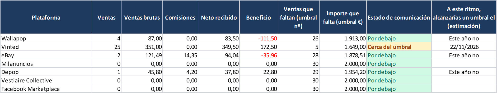
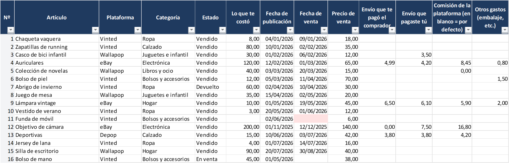

Escribe lo que llevas vendido este año en cada plataforma (mira el historial de ventas de la app):
| Plataforma | Nº de ventas | Importe total (€) | Te quedan | Estado |
|---|
Criterio: la plataforma comunica tus datos si llegas a 30 ventas o superas los 2.000 € en un año natural. Cada plataforma cuenta por separado. «Cerca» = 80 % de un límite.
¿Quieres llevar la cuenta durante todo el año sin hacerlo a mano?
Estoy terminando una plantilla de Excel / Google Sheets que lleva este control por ti: apuntas cada venta en unos 20 segundos y ves en todo momento cuánto te queda en cada plataforma.

- Contador por plataforma (Wallapop, Vinted, eBay, Milanuncios…) con avisos de «Cerca del umbral» y «Umbral alcanzado».
- Estimación de la fecha en la que llegarías al límite a tu ritmo actual.
- Beneficio real por artículo: comisiones, envíos y lo que te costó; marca lo vendido por menos de lo que pagaste.
- Avisa si una venta no se está contando (sin fecha o con un número mal escrito).
- Resumen por meses, anuncios estancados y valor del stock. Cualquier año.
- Excel (probada) y Google Sheets (se importa; instrucciones incluidas). Sin macros, sin suscripción, tus datos en tu archivo.

14,90 € pago único · precio previsto
Todavía no está a la venta. Si te interesa, apúntate al aviso (sin compromiso, no pagas nada) y te escribo una sola vez cuando salga. También me ayuda saber qué le falta.
Preguntas frecuentes
¿El límite es por plataforma o en total?
Por plataforma: cada una informa de lo que vendes en ella. 25 ventas en Wallapop y 25 en Vinted no suman 50 para ninguna de las dos.
¿Qué cuenta como importe?
La norma habla del importe pagado o abonado por las ventas; la plataforma también comunica las comisiones que te retiene. La calculadora usa lo que tú escribas: si pones el importe antes de comisiones, el cálculo es más prudente.
¿Cuándo me entero?
Las plataformas comunican los datos del año anterior a principios del año siguiente y te envían una copia de lo que han comunicado.
¿Va a cambiar el límite?
En junio de 2026 la Comisión Europea propuso subir el importe a 3.000 € y eliminar el criterio de las 30 ventas, pero no está en vigor y necesita la aprobación de todos los países de la UE.
Fuentes oficiales: Agencia Tributaria – Modelo 238 · Vinted – DAC7 · Comisión Europea – DAC7